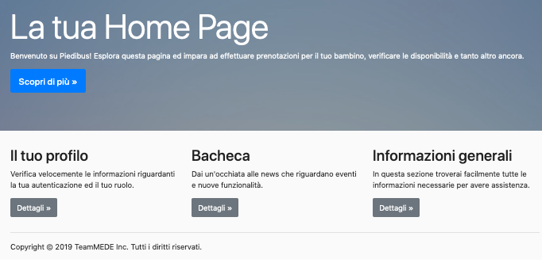
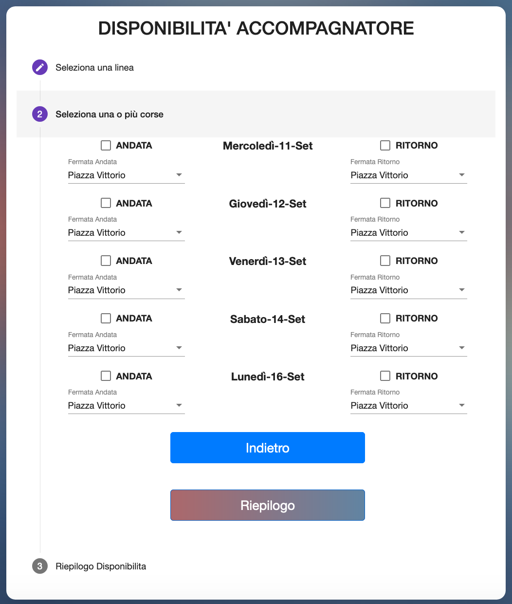
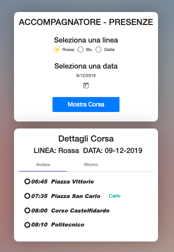

Home
Nella sezione Home puoi accedere facilmente alla sezione "Il tuo profilo" per verificare i tuo dati, alla sezione "Bacheca" per restare sempre aggiornato sulle news o alla sezione "Informazioni generali" per ottener tutte le info assistenza.
Prenotazioni

Nella sezione prenotazioni puoi prenotare una corsa per il tuo bambino. Nella prima fase è possibile selezionare il bambino. Nella seconda fase puoi selezionare le fermate di partenza ed arrivo per ogni giorno della settimana ed avere un breve riepilogo nella terza sezione.
Disponibilità
In questa sezione, se sei un accompagnatore, potrai selezionare la linea e le corse al quale partecipare per l'accompagnamento dei bambini.
Corse
Se sei un accompagnatore potrai verificare le corse prenotate ed i bambini presenti durante la corsa. Ricorda che lo stato dei bambini viene segnalato tramite diversi colori: Azzurro - Bambino prenotato; Nero - bambino non prenotato ma segnalato come possibile presenza; Grassetto - bambino presente. Se serve ricorda che puoi scaricare un file JSON con il resoconto delle presenze nella corsa.
Comunicazioni

Su "Comunicazione" puoi leggere tutte le comunicazioni importanti. Ogni comunicazione sarà segnalata tramite un banner posto sulla barra di navigazione. Ogni messaggio sarà caratterizzato da un numero di notifica e dalla comunicazione.
Mobile

Ricorda che puoi tranquillamente accedere a tutte le funzionalità ed ai servizi del sito tramite l'interfaccia mobile.